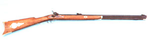
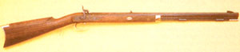
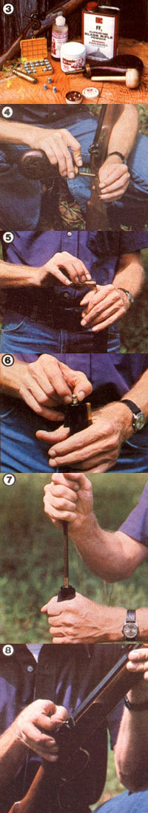
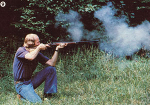
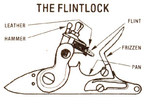
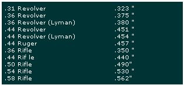

Whether you expect your firearm to provide food, recreational shooting, or a form of "last ditch" insurance against the possibility of harder (!) times to come, you might consider . . .
To many folks, the idea of shooting a black-powder gun is-at first-a bit frightening. After all, the primitive explosive used (producing, upon detonation, clouds of smoke the likes of which you'll never see when firing a contemporary cartridge) must actually be handled by the shooter, since it's measured, and then poured directly down she barrel of the gun . . . a barrel which, if ,he weapon is one of the popular larger-bore muzzleloaders, looks almost big enough to accommodate a bantam's egg! It's understandable, then, that this collection offactors sometimes brings to mind images of accidental overcharges . . . of barrels peeled back banana-skin fashion . . . and of shoulderbreaking kicks.
However, when people first fire the old-timey rifles (or pistols), they're generally surprised by the civility of the weapons. Blackpowder guns don't kick back excessively. In fact, as a result of the slow-burning nature of the explosive (when compared to modern gunpowder), the firearm tends to shove, rather than slam against, your shoulder when it goes off. (By way of comparison, a relatively large .54-caliber muzzleloader-a rifle with a bore comparable to that of a 28-gauge shotgun-will be a lot easier on the shooter than would, say, the average modern 30.06 rifle.)
Of course, there's a lot more to recommend today's crop of muzzleloaders than their relative gentleness. For one thing, such guns provide an opportunity to experiment with the various components of the charge-amount of powder, kind of projectile, thickness of patch (if a ball is used), type of lubricant, and so on-and to learn, through such trial and error research, the full range of the gun's capabilities. To duplicate that educational experience with a later style of gun, you'd have to have access to a good bit of reloading equipment and a whole passel of additional know-how.
Furthermore, the black-powder firearms are practical. Most modern muzzleloaders will do almost anything that a cartridge-firing rifle will do, and even make up for their one disadvantage (the time required to prepare for a second shot) with pluses of their own. Consider: When used for recreational target shooting, a muzzleloader-as noted above-gives the shooter a large degree of control over his or her load, and that extra involvement can't help increasing the satisfaction that results from firing a tight grouping into a target bull's eye.
Or if providing a supply of good-not pesticide/antibiotic/hormone-saturated-meat for your family is the goal uppermost in your mind, you'll be pleased to know that many states allow shooters with "primitive weapons" to enter the deer woods in search of venison before the crowds of "regular" gunners come in.
And folks who like to be prepared for any eventuality know that-especially when kept in conjunction with more up-to-date firearms-a black-powder weapon can provide a real feeling of security. After all, bullets are as close as the nearest scrap of lead (tire rim weights, fishing sinkers, and the like can all be melted down and molded) and, should worst come to worst, a backyard chemist likely could-with little more than pig manure, sulfur, and charcoal-actually brew up his or her own batch of crude black powder!
Perhaps the muzzleloader's chief virtue, though, is its ability to demystify today's firearms . . . providing-in effect-the missing link between a recoilless semiautomatic assault rifle and the hunk of pipe, rock, and firecracker contraptions that many of us either built or heard horror stories about in our childhood. After all, a gun is a tool-no more and no lessand an implement that's understood tends to be an implement that's operated safely.
TAKE A POWDER
As is the case with almost any piece of equipment imaginable, it's best to spend time with-loading, firing, and cleaning-as many types of muzzleloader as you can before actually purchasing a gun. Unfortunately, few people actually have the opportunity to do that . . . so I'll try to provide enough basic information to at least allow the firearm shopper to know, in advance, the kinds of choices he or she will have.
First of all, that would-be gun owner must decide whether to buy a flintlock or a percussion (also called caplock) firearm. Your choice will likely be determined by the uses to which you hope to put the gun and your level of fascination with the primitive nature of such devices.
The flintlock firing mechanism, you see, is by far the older of the two. Developed around the end of the sixteenth century, this ingenious ignition system depends solely upon a piece of flint and powder (both a fine and a coarser grade). Real back-to-basics shooters, then, often prefer it to the more modern caplock . . . which, as you'll see, requires one additional manufactured component. On the other hand, however, the flintlock is generally considered to be more difficult for a beginner to master . . . and-in the hands of all but the most expert muzzleloader enthusiasts-is somewhat more likely to misfire, because of the relative inefficiency of the flint-and-powder priming technique.
Yet the procedure for firing the flintlock is really quite straightforward. (Actual loading methods, which are pretty much the same for the two ignition systems, are discussed in a sidebar accompanying this article.) With the flint-padded by a cushioning strip of leather or lead-in place and the hammer down, fill the pan with a fine (3F or 4F grade) black powder, and use a vent pick (or any appropriate pointed object) to work a few grains down into the touchhole. Then draw the hammer back and shut the elongated cap (called the frizzen) over the powder-filled pan. After making sure, once again, that the flint is securely in place, you're ready to take aim and fire!
While the percussion lock is newer than the flint-fired mechanism, it still goes a long way back . . . probably to the latter part of the eighteenth century. It's generally considered more reliable than its predecessor . . . largely because it doesn't depend upon a pan of loose powder, somewhat exposed to wind and moisture, for its priming charge.
To prepare a percussion gun for firing (after it's loaded), you draw the hammer to full cock and slip a "cap"-a small copper cup with a bit of explosive fulminate inside-down over the now exposed nipple. The hammer can then be put in the "safe", halfcocked position until it's ready to be drawn back to full cock again prior to shooting.
THE MUZZLELOADER MARKETPLACE
ROUND BALL: Selection Guide
Not too long ago, prospective muzzleloading-firearm buyers were often hard put to find much of a selection of available guns . . . and even worse off when it came time to purchase shooting and cleaning supplies for their chosen weapons. Nowadays, however, most sporting goods stores have at least a few black-powder guns (in finished or kit form) hanging on the wall . . . and anyone who lives in an area with a sizable population of hunters can almost count on the fact that a shop specializing in muzzleloaders and related paraphernalia can be found within a couple of hours' drive.
Furthermore, there are a number of suppliers offering black-powder guns by mail. Interestingly enough, these primitive weapons can be shipped through the postal sys tem and purchased, in most areas, without any of the red tape often associated with buying a modern rifle, shotgun, or (especially!) pistol. The accompanying list provides the addresses of a few firms that may be able to supply catalogs or price lists. [EDITOR'S NOTE: If you were to order a single shop-by-mail book, however, MOTH ER's black-powder enthusiasts recommend the $3.00-or $5.00, for C.O.D. or credit card ordersDixie Gun Works catalog. It not only lists most of the available equipment, but will teach you a good bit while you enjoy leafing through it!]
Should you live in a region where considerable deer hunting goes on, now's the time to begin scanning local shopper's guides for used muzzleloaders. In my part of the country, at least, it seems that a number of folks buy the black-powder guns every year-in the hopes of extending the hunting season-only to sell them as fall draws to a close . . . likely because the inconvenience of the weapons, compared to modern hunting rifles, turned out to be more than the new owners had bargained for. At times it's possible to get a gun that's been fired only a few times for about half its new price. (Do, however, make sure you know just how much that previously owned flintlock or percussion model costs when new. I heard of one bargain-hunter who was very proud of his admittedly near-perfect used gun, until he discovered that he'd paid $25 more than the same firearm was being sold for at a nearby sporting goods store!)
If you do plan to buy a muzzleloader from an individual rather than from a store or catalog, your best bet-before you make the purchase-is to talk the owner into going out with you and firing the piece a few times. Pay special attention to the ease with which the first loaded ball is rammed down the barrel. It should take some pressure, but if the owner has to struggle with a ball that seems to be jamming on its way down, there's a good chance that he or she didn't bother to clean the weapon after its last firing. Now such a sign of carelessness doesn't necessarily mean you shouldn't purchase the gun, but it-or a suspicious succession of misfires-would make it advisable for you to ask the owner to clean the gun after a few shots and then to try it out yourself. If the just-swabbed muzzleloader still misfires often, or doesn't load more easily, it's likely that neglect has resulted in some internal corrosion.
You may also, in your search for a primitive weapon, come across an actual antique. While such a gun can represent a good investment (and many of them, after restoration, shoot very nicely), don't attempt to fire the gun without having a competent gunsmith go over it and recommend an appropriate ball size and maximum powder load (a course of action, actually, that you'd do well to follow with any used gun, especially if the manufacturer's load recommendations aren't available).
MUZZLE ODE
Should the information presented in this introduction to the subject convince you to make the acquaintance of a black-powder firearm-and if you approach the matter with reasonable expectations-you're likely to acquire both a lifetime tool and a longlasting enthusiasm. Many people, you see, have discovered that shooting black-powder guns is one of those rare activities that bridge the gap between practicality and pleasure. In fact, if you're the least bit impressionable, you'll find it difficult to do so much as stroll out in the back field to ventilate a couple of old tin cans without conjuring up images of early Americans who-with a leather sack of powder and a couple of dozen lead balls strung from their belts shouldered similar weapons and, turning their backs on the cities, set out into a wil derness that they knew only as bordellos, unpredictable, and strange.
THE LOADING LOWDOWN
When the time comes to push a projectile into the barrel of your new firearm, you'll be faced with yet another choice: whether to shoot the traditional patch-and-ball load, or the more modern-and somewhat more accurate, under most circumstances-conical Minie ball (named for Claude Minie; the French army officer who invented it in the nineteenth century).
Of course, before you load anything, you'll have to determine the amount of powder-as measured in grains-to charge your gun with . . . and as was mentioned elsewhere in this article, if you don't know the manufacturer's recommended maximum load, consult a gunsmith or experienced black-powder shooter to determine a cafe charge. Then, once you begin to experiment with various loads, you might consider settling on one that produces a somewhat flat bullet trajectory at about 50 yards . . . with that known, it's a relatively easy matter to adjust your aim to compensate for drop at greater ranges.
If you choose to use a patched ball, you'll need patches, of course. It's probably best to buy a package of them at first, then cut your own to size from cotton or some other nonsynthetic cloth. The next step is to grease the patch. There are a number of lubricants on the market, but lard works quite well . . . and even saliva will do if you plan to shoot the gun before the moisture has a chance to start rusting the bore. Now, pour the powder from your large container (be it the can the explosive came in or a powder horn) into a measure . . . such as the one shown in the accompanying photo. Never pour directly from a large container into the barrel, since a lingering spark (from a previous shot) could ignite the charge and flash back to turn that flask or car: into a bomb. Pour the measure of powder into the muzzle (keep the opening angled away from your body), then smack the barrel a few times, moving from top to bottom, with the heel of your hand . . . to settle the explosive in the breech.
With that done, place the parch, lubricant down, across the barrel and center the bullet, with the molding mark up, on top of it. Use a mushroom-shaped ball starter (shown in the loading equipment photo) to seat the projectile in the muzzle . . . then, if necessary, take a knife and trim away any excess patch. Now, turning the ball starter around, use its short rod to push the bullet partway down the barrel.
The ramrod comes into play next, and this is as good a time as any to recommend that you purchase art accessory fiberglass rod . . . the wooden units supplied with many modern muzzleloaders seem to break fairly easily. Use the rod to seat the hail and patch on top of the powder with a smooth, uninterrupted movement. It's a good idea to mark the stick at the point where it leaves the barrel when the ball is fully rammed home, too, as this measure will help you avoid firing the gun without seating the hall on top of the powder . . . a mistake that could result in a ruined bar rel, or worse. At this point your gun is charged and after you prime it in the appropriate flintlock or percussion manner, will be ready to fire.
The procedure for loading the Minie ball-which is detailed in the accampaying photos-is identical to that used with the ball and patch except that [a] no parch is required, but the grooves in the side of the shell should be filled with lubricant, and [b] you can probably insert the Minie into the muzzle without a ball starter.
MUZZLELOADERS BY MAIL
A & K Mfg. Co.
Dept. TMEN
1651 North Nancy Rose Avenue
Tucson, Arizona 85712
(catalog free)
The Armoury, Inc.
Dept. TMEN Route 202
New Preston, Connecticut 06777
(catalog free)
Century Arms, Inc.
Dept. TMEN 5 Federal Street
St. Albans, Vermont 05478
(no catalog)
Colt Industries
Firearms Division
Dept. TMEN
545 New Park Avenue
West Hartford, Connecticut 06110
(catalog free)
Connecticut Valley Arms
Dept. TMEN
Saybrook Road
Haddam, Connecticut 06438
(catalog free)
Dixie Gun Works, Inc.
Dept. TMEN
P.O. Box 130
Gun Powder Lane
Union City, Tennessee 38261
(catalog $3.00 cash, $5.00 credit or C.O.D.)
Firearms Import & Export Corp.
Dept. TMEN
P.O. Box 4866
Hialeah Lakes
Hialeah, Florida 33014
(catalog free)
J.L. Galef & Son, Inc.
Dept. TMEN
85 Chambers Street
New York, New York 10007
(catalog free)
Harrington & Richardson, Inc.
Dept. TMEN
Industrial Rowe
Gardner, Massachusetts 01440
(catalog free)
High Standard, Inc.
Dept. TMEN
31 Prestige Park Circle
East Hartford, Connecticut 06108
(catalog free)
Lee Precision, Inc.
Dept. TMEN
4275 Highway U
Hartford, Wisconsin 53027
(catalog free)
Lyman Products
Dept. TMEN
Route 147
Middlefield, Connecticut 06455
(catalog $2.00)
Navy Arms Co.
Dept. TMEN
689 Bergen Boulevard
Ridgefield, New Jersey 07657
(catalog $2.00)
Shiloh Products, Inc.
Dept. TMEN
37 Potter Street
Farmingdale, New York 11735
(catalog free)
Sturm, Ruger & Company, Inc.
Dept. TMEN
Lacey Place
Southport, Connecticut 06490
(catalog free)
Thompson/Center Arms
Dept. TMEN
Farmington Road
Rochester, New Hampshire 03867
(catalog free)
A CLEAN SHOT
Because of the particularly corrosive nature of black powder, you'll have to clean your muzzleloader thoroughly after each shooting session. (In fact, it's often necessary to scarab out tire barrel with a blackpowder solvent-followed by a few clean patches to soak rep the residue-after every three to six shots. Once you've had some practice, the pressure on your ramrod will tell you when this should be done.)
Here's the traditional method of cleaning a blackpowder gun: [1] Wash the bore, using a brush on tire end of your ramrod, with a strong solution of very hot soapy water At the same time, use the liquid to wipe any powder smudges from the hammer area, etc. [2] Rinse the barrel, several tunes, with the hottest water you dare poor. In addition to removing the soap residue from tire bore, this hot bath actually warms the metal of tire barrel to the point where it will cause any remaining moisture to begin to evaporate. [3] Using clean cloth patches arid your ramrod, dry the bare . . . and use a cloth to wipe any moisture front the gun's exterior. [4] Swab all cleaned areas with a coating of gun oil.
Thanks to the growing popularity of muzzleloading firearms, there are ooze a number of black-powder solvents available. To clean your gun with one of these, simply [1] scrub nut the horn with the liquid, using first a brass brush and then a number of patches (keep using there until one comes out showing no dissolved powder residue) . . . [2] put solvent on a clean cloth to wipe dozen and dry all exterior rectal parts . . . [3] again, being generous with your supply of patches, swab the bore dry . . . and [4] coat the inside of the barrel, and all other metal components, with gun oil.
Remember that a black-powder firearm won't holdup under the kind of neglect that a more modern weapon can tolerate. If you give the gun the care you'd bestow on any quality tool, however, it should serve you-and your children after you-faithfully After all, there are a lot of century-old-older-black-powder firearms still shooting today . . . and most contemporary muzzleloaders are fashioned from better materials than were available, when their "ancestors" were crafted!
SOME WORDS OF CAUTION
[1] All black-powder revolvers, pistols, and rifles are intended for use with black powder only. Use of any other propellant may cause serious injury to the shooter and damage to the firearm. Never use smokeless powder.
[2] Guard against overcharges.
[3] Wear safety glasses when shooting black-powder firearms. Shatterproof shooting glasses will protect the eyes from sparks, broken percussion caps, hot gases, and lead fragments.
[4] Protect your hearing. Use an ear plug or muff when firing any firearm.
[5] Be certain the projectile is seated firmly against the powder charge. Any gap between the projectile and the powder charge could cause serious damage to the firearm and injury to the shooter. Hunters, in particular, should check the position of the projectile in the barrel at regular intervals when in the field.
[6] Use only nonsynthetic cloth patching of suitable thickness when loading round balls.
[7] Never charge a muzzleloader directly from a powder flask. A sudden powder ignition from a lingering spark could cause the entire flask to explode. Instead, use an individual charge from a powder measure when loading your gun.
[8] Never smoke when handling black powder.
[9] Before each shooting session, be sure to check your black-powder firearm carefully.
[10] Before relying on the half-cocked position, make certain the hammer will not fall when the trigger is pulled.
[11] While on the firing line, keep all black-powder canisters closed.
[12] Keep spectators to the rear of the shooter. Standing beside a muzzleloader is not safe enough. Flames, hot gases, and percussion cap fragments may fly from the side of the firearm, causing injury.
[13] Keep clear of the muzzle, particularly during loading.
[14] If the gun misfires, keep the muzzle pointed down range for at least a minute before attempting to reprime it. There is always the chance a spark is smoldering in the powder charge, and the gun could fire at any second.
[15] Treat unprimed flintlocks as loaded weapons. Sometimes the sparks of an unprimed flintlock can fire the gun.
[16] Use a nonflammable material to hold the flint in place. Cloth, cardboard, or canvas could hold a lingering spark, which might set off the next priming charge unexpectedly.
[17] Store black powder and percussion caps in separate locations. Use their original containers when possible. Caps are sensitive to static electricity, percussion, heat, and flame. Powder is sensitive to static electricity, heat, and flame. Check local fire regulations before storing black powder in the home.
[18] Follow the basic rules of firearm safety when handling any black-powder firearm.
|
 |
 |
 |
|
 |
 |
 |